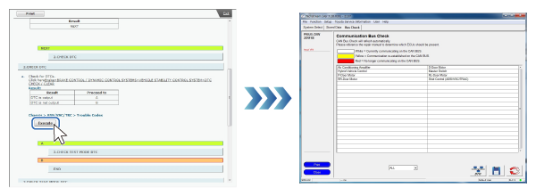
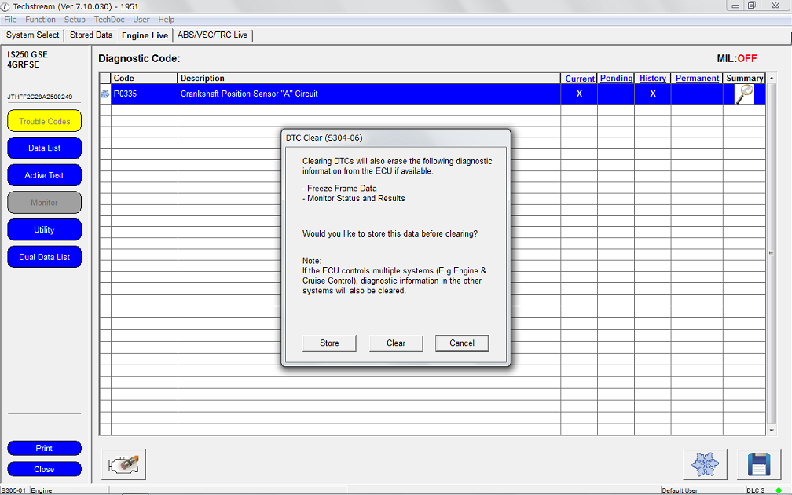

GTS linkage is possible if GTS is connected to the vehicle.
Clicking on the Execute button that is displayed in diagnostic procedures, etc. starts GTS automatically and the Health Check screen is displayed. The same kind of linkage function can also be used with active tests, CAN bus checks, etc.
Click on the Execute button. The GTS screen starts and is displayed.  |
| Diagnostic Code Reading |
The diagnostic code is read automatically and the result is displayed. |
Diagnostic code deletion |
A confirmation screen for diagnostic code deletion is displayed.  |
Data monitor |
The data monitor relevant to the Repair Manual procedure is displayed. (Relevant items are displayed at the top of the list.) |
Active test |
The active test item relevant to the Repair Manual procedure is automatically selected and Execute is displayed. |
Work support |
The work support item relevant to the Repair Manual procedure is automatically selected and the first work step is displayed. |
Customize Parameters |
Displays Customize Parameters items. |
CAN bus check |
A CAN bus check is executed automatically and the result is displayed. |